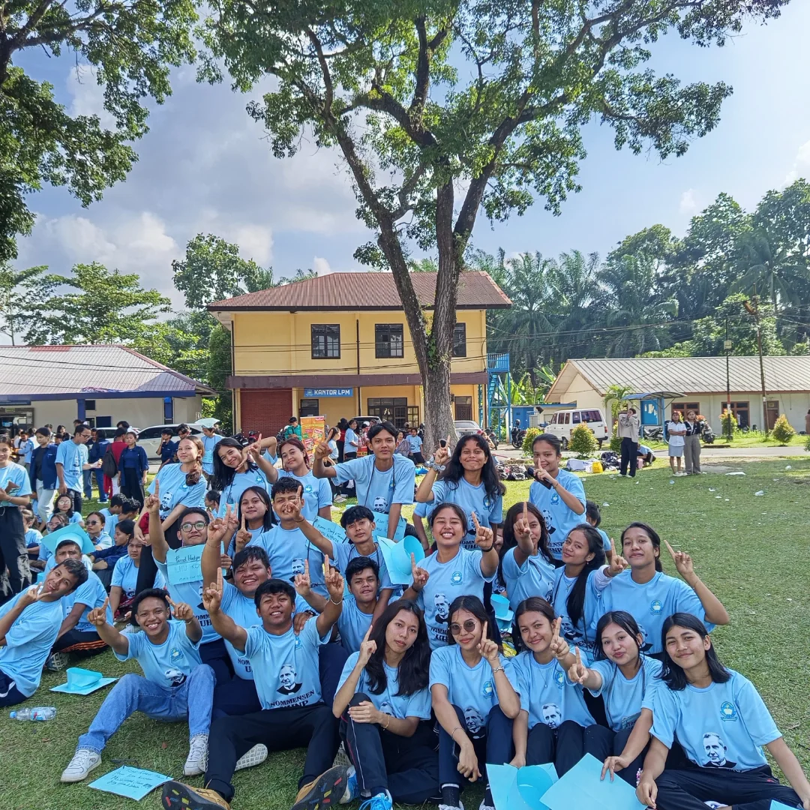
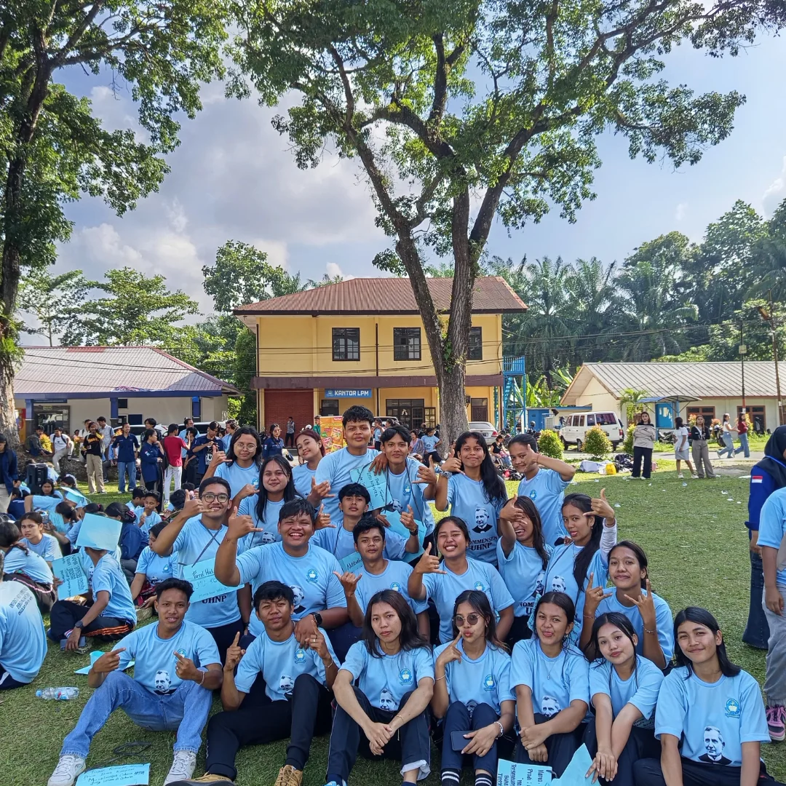

Tentang Kelas IK1
Kelas IK1 (Ilmu Komputer 1) merupakan komunitas akademik yang berfokus pada penguasaan dasar-dasar ilmu komputer, pemrograman, dan pemikiran komputasional sebagai fondasi menghadapi tantangan era digital dan revolusi industri 4.0.
Visi & Misi
Visi
Menjadi kelas yang unggul, adaptif terhadap perkembangan teknologi, serta mampu menghasilkan sumber daya manusia yang kompeten dan beretika.
Misi
- Menguasai konsep dasar dan lanjutan ilmu komputer
- Mengembangkan kemampuan problem solving berbasis teknologi
- Meningkatkan kolaborasi dan inovasi digital
- Mempersiapkan mahasiswa menghadapi dunia industri teknologi
Mata Kuliah
- Algoritma dan Pemrograman
- Matematika Diskrit
- Pengantar Teknologi Informasi
- Logika Informatika
- Sistem Komputer
Anggota Kelas
| No | Nama | NIM |
|---|---|---|
| 1 | DESY TRISANTY LUMBAN TOBING | 2502050001 |
| 2 | ALISZYA ANDRIANI | 2502050002 |
| 3 | DAVID ALEXSANDER TAMPUBOLON | 2502050003 |
| 4 | FARREL HADYAN VERIANDI | 2502050004 |
| 5 | SILVIA RIZKY YULIANDITA | 2502050005 |
| 6 | AIRIN JELITA HUTAGALUNG | 2502050006 |
| 7 | PRISCA ROMAULI NAIBAHO | 2502050007 |
| 8 | FERNANDO AGUSTINUS IMANUEL SITUMORANG | 2502050008 |
| 9 | ARIEF OWEN STEVEN H. SIHOTANG | 2502050009 |
| 10 | TOGAR RIPALDO TAMPUBOLON | 2502050010 |
| 11 | RENOVA OKTAVIA SITUMEANG | 2502050011 |
| 12 | MARTHA CHRISELDA HUTAPEA | 2502050012 |
| 13 | LASMIAR SIRAIT | 2502050013 |
| 14 | CHRISTIN ROMA ITO NAPITUPULU | 2502050014 |
| 15 | YOHANNA NAPITUPULU | 2502050015 |
| 16 | OLIVIA LORENA SARAGIH | 2502050016 |
| 17 | INTAN CHRISTIANI SIANIPAR | 2502050017 |
| 18 | JUNI ARTA ESTERIA BR. PASARIBU | 2502050018 |
| 19 | DESWINDA PERMATA SITUMORANG | 2502050019 |
| 20 | ANGEL CAROLINA SINAGA | 2502050020 |
| 21 | PUTRI GRESCIA PANGARIBUAN | 2502050021 |
| 22 | XRESTDY G SILALAHI | 2502050022 |
| 23 | DEA FAHDILA FASIA SIMAMORA | 2502050023 |
| 24 | ALEX COLAND PARDEDE | 2502050024 |
| 25 | THERESIA SIMARMATA | 2502050025 |
| 26 | AGNESYA OMPUSUNGGU | 2502050026 |
| 27 | WIDYA KASIH FEBRYANTI SIMATUPANG | 2502050027 |
| 28 | ALDO NOTATEMA TELAUMBANUA | 2502050028 |
| 29 | JONATHAN MG PUTRA SARAGIH | 2502050029 |
| 30 | CINTAN KURNIA GINTING | 2502050030 |
Galeri Kegiatan Kelas IK1
Dokumentasi kebersamaan dan kegiatan kelas IK1.

